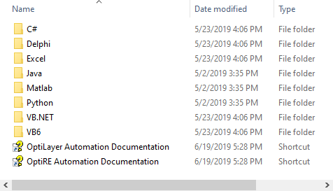

Automation Examples and Documentation
Automation Examples and Documentation
Current version of OptiLayer supports the so-called COM Automation.
Important Note:
|
COM Automation is not available in the DEMO version of OptiLayer Thin Film Software |
Therefore it is possible to call OptiLayer functions and get results back from any user’s program. The only requirement is to use a tool supporting COM automation technology. It is possible to use Python, Visual Basic, Visual C++, C#, Embarcadero C++ and Delphi, Java, Matlab, VBA for Microsoft Office, LabVIEW and many others.
The examples are installed at your desktop in OptiLayer Automation Examples folder:

All examples include full source code with detailed step-by-step comments, sending and receiving information and driving OptiLayer functions.
Important Note:
|
You can find the link to OptiLayer Automation COM Documentation in this folder and in OptiLayer menu. |